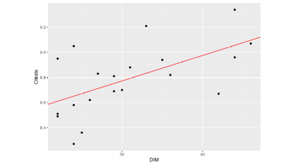
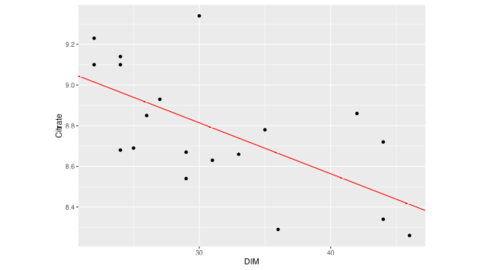

| Cow | DIM | Citrate |
|---|---|---|
| 1 | 22 | 9.10 |
| 2 | 22 | 9.23 |
| 3 | 22 | 9.10 |
| 4 | 24 | 8.68 |
| 5 | 24 | 9.10 |
| 6 | 24 | 9.14 |
| 7 | 25 | 8.69 |
| 8 | 26 | 8.85 |
| 9 | 27 | 8.93 |
| 10 | 29 | 8.67 |
| 11 | 29 | 8.54 |
| 12 | 30 | 9.34 |
| 13 | 31 | 8.63 |
| 14 | 33 | 8.66 |
| 15 | 35 | 8.78 |
| 16 | 36 | 8.29 |
| 17 | 42 | 8.86 |
| 18 | 44 | 8.34 |
| 19 | 44 | 8.72 |
| 20 | 46 | 8.26 |
Problem 1: Linear Regression
According to Figure 1 of (Chen et al. 2023) the concentration of citrate in milk between days in milk (DIM) 20 and 50 can be modeled by a linear regression. The dataset shown below contains measurements of 20 cows with their respective days in milk.
The dataset is available from
https://charlotte-ngs.github.io/asmasss2024/data/asm_exam_2024_p01.csv Solution
Solution
Solution


Solution
Problem 2: Fixed Linear Effects Model
In the dataset below, the influence of the breed on the citrate concentration in milk is investigated.
| Cow | DIM | Breed | Citrate |
|---|---|---|---|
| 1 | 22 | BS | 8.71 |
| 2 | 22 | HO | 9.99 |
| 3 | 22 | BS | 8.84 |
| 4 | 24 | BS | 8.87 |
| 5 | 24 | BS | 9.03 |
| 6 | 24 | BS | 8.57 |
| 7 | 25 | BS | 9.25 |
| 8 | 26 | HO | 9.22 |
| 9 | 27 | HO | 9.57 |
| 10 | 29 | BS | 8.66 |
| 11 | 29 | BS | 8.80 |
| 12 | 30 | BS | 8.80 |
| 13 | 31 | HO | 9.67 |
| 14 | 33 | HO | 9.21 |
| 15 | 35 | HO | 9.63 |
| 16 | 36 | HO | 8.83 |
| 17 | 42 | HO | 8.76 |
| 18 | 44 | HO | 8.95 |
| 19 | 44 | BS | 8.67 |
| 20 | 46 | BS | 8.56 |
The dataset is available from
https://charlotte-ngs.github.io/asmasss2024/data/asm_exam_2024_p02.csv Solution
Solution
Solution
Problem 3: Interactions
Use the following dataset to fit a fixed linear model assuming that the regression of Citrate on DIM shows an interaction with the Breed factor.
| Cow | DIM | Breed | Citrate |
|---|---|---|---|
| 1 | 22 | BS | 8.21 |
| 2 | 22 | HO | 9.51 |
| 3 | 22 | BS | 8.34 |
| 4 | 24 | BS | 8.37 |
| 5 | 24 | BS | 8.53 |
| 6 | 24 | BS | 8.07 |
| 7 | 25 | BS | 8.75 |
| 8 | 26 | HO | 8.74 |
| 9 | 27 | HO | 9.10 |
| 10 | 29 | BS | 8.16 |
| 11 | 29 | BS | 8.30 |
| 12 | 30 | BS | 8.30 |
| 13 | 31 | HO | 9.20 |
| 14 | 33 | HO | 8.75 |
| 15 | 35 | HO | 9.16 |
| 16 | 36 | HO | 8.36 |
| 17 | 42 | HO | 8.30 |
| 18 | 44 | HO | 8.49 |
| 19 | 44 | BS | 8.17 |
| 20 | 46 | BS | 8.06 |
The dataset is available from
https://charlotte-ngs.github.io/asmasss2024/data/asm_exam_2024_p03.csv Solution
Solution
Problem 4: Contrasts
The dataset below is used to fit a fixed linear effects model with Citrate as response and Breed as fixed effect.
| Cow | Breed | Citrate |
|---|---|---|
| 1 | BS | 8.71 |
| 2 | HO | 9.99 |
| 3 | BS | 8.84 |
| 4 | BS | 8.87 |
| 5 | BS | 9.03 |
| 6 | BS | 8.57 |
| 7 | BS | 9.25 |
| 8 | HO | 9.22 |
| 9 | HO | 9.57 |
| 10 | BS | 8.66 |
| 11 | BS | 8.80 |
| 12 | BS | 8.80 |
| 13 | HO | 9.67 |
| 14 | HO | 9.21 |
| 15 | HO | 9.63 |
| 16 | HO | 8.83 |
| 17 | HO | 8.76 |
| 18 | HO | 8.95 |
| 19 | BS | 8.67 |
| 20 | BS | 8.56 |
The dataset is available from
https://charlotte-ngs.github.io/asmasss2024/data/asm_exam_2024_p04.csv Solution
Solution
Problem 5: Linear Mixed Effects Models
Use the dataset below to fit a linear mixed effects model. In this model Citrate is the response and DIM and Breed are regression variables and fixed effects, respectively. You do not have to include any interaction effects.
| ID | Sire | Dam | DIM | Breed | Citrate |
|---|---|---|---|---|---|
| 5 | 1 | NA | 22 | BS | 9.30 |
| 6 | 1 | NA | 22 | HO | 9.26 |
| 7 | 1 | 5 | 22 | BS | 8.92 |
| 8 | 1 | 5 | 24 | BS | 9.30 |
| 9 | 1 | 6 | 24 | BS | 9.03 |
| 10 | 1 | 6 | 24 | BS | 8.82 |
| 11 | 2 | 7 | 25 | BS | 9.09 |
| 12 | 2 | 7 | 26 | HO | 9.04 |
| 13 | 2 | 8 | 27 | HO | 9.71 |
| 14 | 2 | 8 | 29 | BS | 8.52 |
| 15 | 2 | 9 | 29 | BS | 9.18 |
| 16 | 3 | 9 | 30 | BS | 8.85 |
| 17 | 3 | 10 | 31 | HO | 9.04 |
| 18 | 3 | 10 | 33 | HO | 9.04 |
| 19 | 3 | 11 | 35 | HO | 9.44 |
| 20 | 3 | 11 | 36 | HO | 9.18 |
| 21 | 3 | 12 | 42 | HO | 8.88 |
| 22 | 4 | 12 | 44 | HO | 8.96 |
| 23 | 4 | 13 | 44 | BS | 8.74 |
| 24 | 4 | 13 | 46 | BS | 8.52 |
The dataset is available from
https://charlotte-ngs.github.io/asmasss2024/data/asm_exam_2024_p05.csv Solution
Solution
References
Chen, Yansen, Hongqing Hu, Nicolas Gengler, Cl’ement Grelet, and Katrien Wijnrocx. 2023. “Genetic analysis of milk citrate predicted by milk mid- infrared spectra of Holstein cows in early lactation.” J. Dairy Sci. https://doi.org/10.3168/jds.2023-23903.